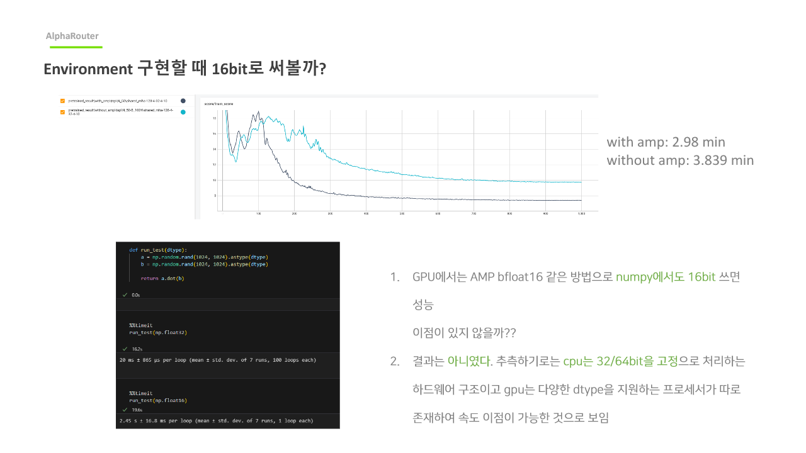
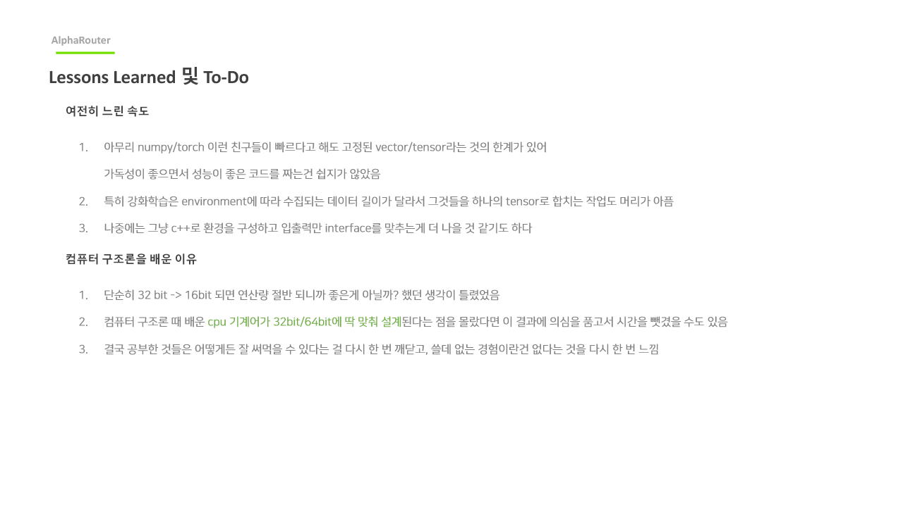

핵심 메시지
기존 배차 기능 재사용 구조에서 API 경계를 정리하고, 검색 후보 생성/필터링을 대규모 벡터 연산으로 재구성했습니다.
Supporting Case
복화 후보 탐색을 단순 loop 기반이 아니라 후보쌍 생성 + 벡터화 필터 파이프라인으로 바꿔, B2C 모바일 3초 응답 요구를 만족한 API 최적화 작업입니다.
기존 배차 기능 재사용 구조에서 API 경계를 정리하고, 검색 후보 생성/필터링을 대규모 벡터 연산으로 재구성했습니다.
2024.06 ~ 2024.12
기존 기능 분해 설계, API 분리, 데이터 파이프라인 설계, 성능 실험
Python, FastAPI, pandas, Redis, PostgreSQL, CI/CD, Prometheus
처리 시간 900초 → 1초, 모바일 응답 지연 구간을 제거
B2C 모바일 서비스는 응답 체감 속도가 핵심이었고, 3초를 넘는 후보 탐색은 실제 사용성에서 곧바로 이탈로 이어졌습니다. 기존에는 오래된 배차 로직을 재사용하면서도 후보군 탐색이 증가할수록 응답이 급증했습니다.

이 그림에서 봐야 할 점

이 그림에서 봐야 할 점
| 증상 | 원인 | 조치 | 결과 |
|---|---|---|---|
| 특정 시간대 후보 탐색 지연 급증 | 요청량 증가 시 loop 탐색 구간이 선형 이상으로 확대 | self-merge 전처리와 boolean 필터 조합으로 처리 파이프라인 교체 | 평균 응답이 대폭 개선되고 지연 변동성이 줄어듦 |
| 모듈 재사용 후 정책 누락 | 공유된 submodule에 프로젝트별 제약이 섞임 | 기능을 API 경계에서 캡슐화하고 계약 검증을 추가 | 요청 간섭이 줄고 운영 품질이 안정화됨 |
| 3초 SLA 위반 알림 빈번 | 성능 지표가 API 단위로 나뉘지 않아 알람이 모호 | 후보 생성/필터/결합 구간을 별도 지표로 분리 | 원인 구간을 즉시 식별해 조치 속도 증가 |
900초에서 1초로 응답 지연을 단축해 모바일 제약을 충족
기능별 API 분리로 병목 구간을 독립적으로 확장 가능
SLA 위반 원인 추적과 재시도 정책이 명확해져 운영 대응이 빨라짐
조합 탐색 문제를 데이터 파이프라인 문제로 재정의하면 최적화 폭이 훨씬 커집니다.
기능 분할은 성능뿐 아니라, 추적성과 장애 대응성도 함께 개선합니다.
지표를 단계별로 분리하면 제품 팀과 운영 팀 모두 같은 언어로 문제를 협업할 수 있습니다.